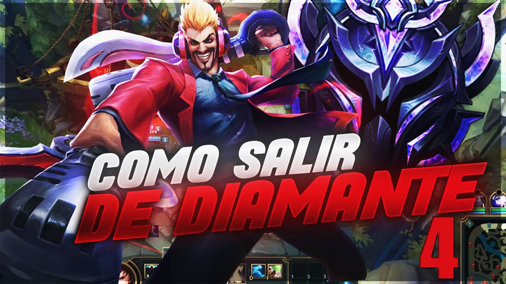

Clasificatoria Diamante.
Como salir de Diamante.
Lo que pasa mucho en platino /D4
1) Alargan partidas al dope
2) No cierran la partida en la primera oportunidad
3) Se regalan teniendo dominio absoluto de la partida tirandose de a 1 dándole chance al team enemigo a remontar(por confiarse)
4) Fallan en mantener la vision del mapa parece que tienen los ward de adorno
5) Muchos no tienen 1 ojo en el minimapa y se comen ganks evitables
6) Después de fase de líneas se pierden y pasean por el mapa sin saber que hacer (falta de macro)
7) Regalan objetivos
Con estos ejemplos que di algo que pasa comun mente si ases todo lo que mencione alreves podras mejorar al jugar en la Clasificatoria Diamante
Clasificatoria Gran Maestro